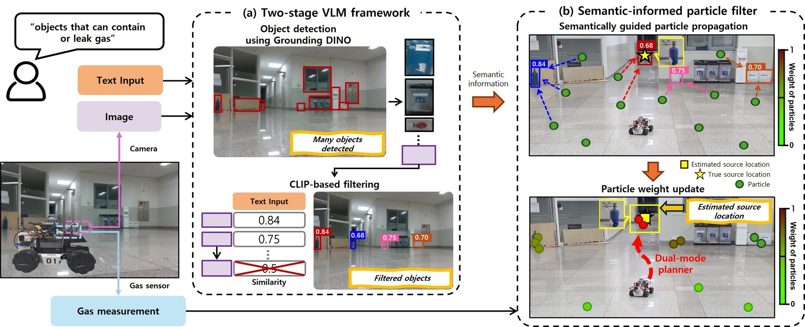
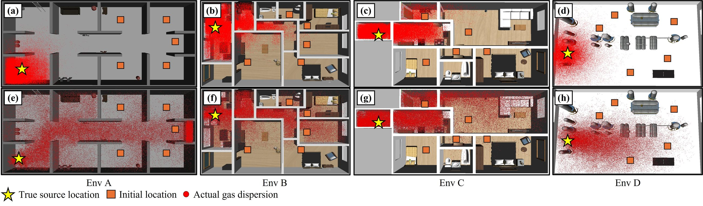
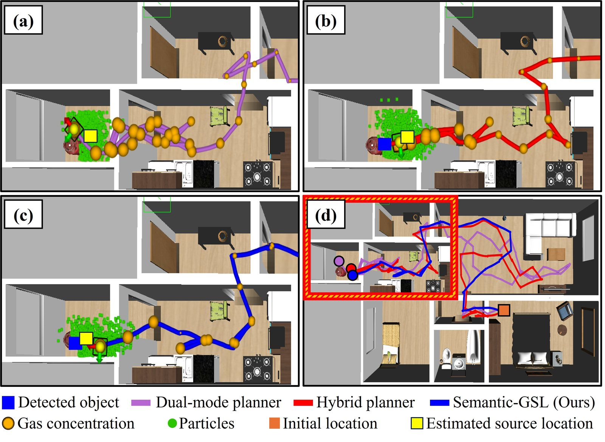
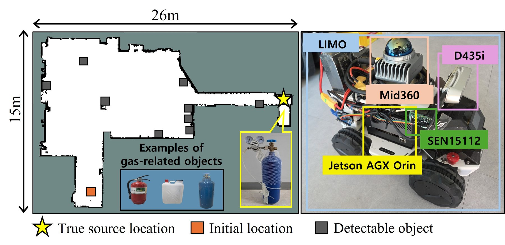

Abstract
This study presents Semantic-GSL, a semantic-informed vision-integrated framework for gas source localization (GSL) in unknown indoor environments. Indoor GSL is challenging because gas concentration measurements are sparse and noisy, while airflow often deviates from simplified dispersion models. Existing vision-integrated approaches rely on predefined object categories or large multimodal models that are impractical for on-board deployment. To address these limitations, we employ a lightweight two-stage vision-language model framework combining Grounding DINO and CLIP for open-set detection of gas-related objects using general environmental descriptions. The extracted semantic information is probabilistically incorporated into posterior estimation through the proposed semantic-informed particle filter, yielding a semantically informative posterior that enables efficient information-theoretic source search. Simulations demonstrate enhanced search efficiency and robust localization across diverse environments, while real-world experiments confirm the feasibility of on-board deployment.
Video
Method

Two-stage VLM framework
Gas-related object categories cannot be listed in advance in an unknown building, so the robot searches with one general description: “objects that can contain or leak gas”. Grounding DINO struggles with this kind of descriptive prompt, so it is used only as a high-recall first stage with a low box threshold (\(\tau_b = 0.15\)). CLIP then re-scores every cropped candidate against the same text and keeps those with similarity above \(\tau_s = 0.6\). Each kept box is projected to a map position with depth, giving a semantic observation \(\mathbf{S}_{k,j} = [\mathbf{p}_{k,j}^\top \; s_{k,j}]^\top\) of position and similarity score.
Candidate quality on 317 real-world images (gas cylinders, solvent containers, and fire extinguishers as ground truth).
| Method | Cand./img | Precision | Recall | F1-score |
|---|---|---|---|---|
| Grounding DINO only (OGD) | 5.50 | 0.24 | 0.87 | 0.37 |
| Two-stage VLM (Ours) | 3.28 | 0.34 | 0.75 | 0.47 |
Semantic-informed particle filter (SIPF)
A detected object says nothing physical about the gas, so SIPF does not treat semantics as a likelihood. Instead, semantics enter the transition model as contextual guidance over where the source could be, while the gas measurement alone sets the particle weights:
Each particle is propagated with a three-step hierarchical sampling procedure:
- Pick an object. Sample a candidate index in proportion to its CLIP score, \(P(j \mid \mathcal{S}_k) = s_{k,j} / \sum_{l} s_{k,l}\).
- Propose a source location near it. \(\tilde{\mathbf{r}}^n_{s,k} \sim \mathcal{N}(\mathbf{p}_{k,j^n}, \sigma_q^2 \mathbf{I})\), keeping the release rate and spread unchanged.
- Limit the jump. Accept with probability \(\min\{1, \exp(-\lVert \tilde{\mathbf{r}}^n_{s,k} - \mathbf{r}^n_{s,k-1} \rVert^2 / 2\sigma_p^2)\}\) and cap the move at \(d_m\), so particles do not all collapse onto one object.
The gas measurement then reweights every particle, \(\bar{w}^n_k = p(z_k \mid \boldsymbol{\theta}^n_k)\, w^n_{k-1}\). Particles drawn to a non-source object lose weight once the robot measures low concentration there, and particles near the true source gain it. Because particles gather around plausible objects, measuring there is expected to resolve the most uncertainty, so the dual-mode planner, which maximizes expected information gain, naturally visits those regions first.
Simulation
Gas dispersion is simulated with GADEN in Gazebo, using ethanol as the invisible gas and a Clearpath Jackal with a VLP-16 LiDAR, a camera, and a PID sensor. Four layouts are tested: a simple indoor space (A), two residences (B, C), and a factory (D). Each runs with no wind, which matches the dispersion model, and with 0.5 m/s wind, which breaks it. Every condition has 100 runs from five start points, and a run succeeds when the final estimate is within 5 m of the source.


Results
Env A, wind 0.0 m/s. SR over 100 runs; other metrics are mean (std) over successful runs. Best value in bold.
| Method | Sensor | Success rate | Steps | Error [m] | Travel time [s] |
|---|
The hybrid planner follows the gas-only planner and switches to the most relevant detected object once concentration exceeds 1,000 ppm. Semantic-GSL (OGD) uses SIPF with Grounding DINO candidates only, without CLIP filtering.
Real-world experiment

An AgileX Limo carries a Livox Mid-360 LiDAR, an Intel RealSense D435i, and an SEN15112 gas sensor, with everything computed on a Jetson AGX Orin. FAST-LIO2 provides odometry and the occupancy map. The two-stage VLM runs in parallel with gas sampling at about 1.6 Hz (Grounding DINO 560 ms, CLIP 86 ms). Each method was run 10 times after 5 minutes of release.
Real-world results over 10 runs.
| Method | Success rate | Steps | Error [m] | Travel time [s] |
|---|---|---|---|---|
| Dual-mode planner | 80% | 81.25 | 4.70 | 839.29 |
| Hybrid planner | 90% | 79.00 | 3.12 | 799.08 |
| Semantic-GSL (Ours) | 100% | 70.20 | 0.64 | 743.56 |
BibTeX
@article{park2026semanticgsl,
title = {Semantic-{GSL}: Vision-Language Semantics for Information-Theoretic Gas Source Localization},
author = {Park, Hyoungho and Jang, Hongro and Kim, Seunghwan and Lee, Junhee and Kim, Jiwoo and Oh, Hyondong},
journal = {IEEE Robotics and Automation Letters},
volume = {11},
number = {12},
pages = {14180--14187},
year = {2026},
doi = {10.1109/LRA.2026.3746162}
}